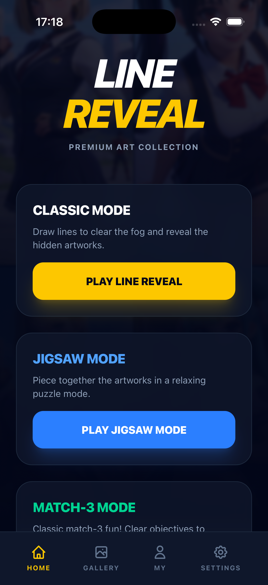
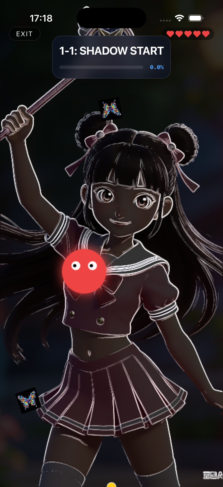
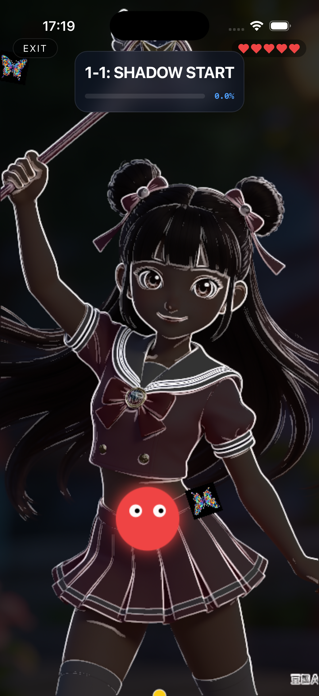
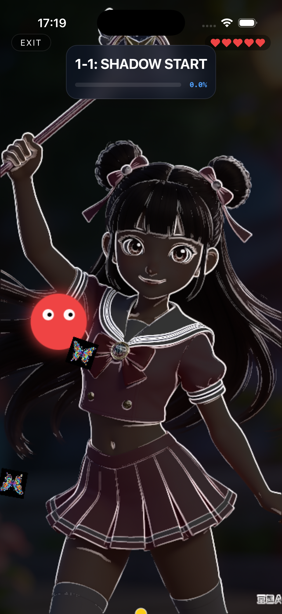
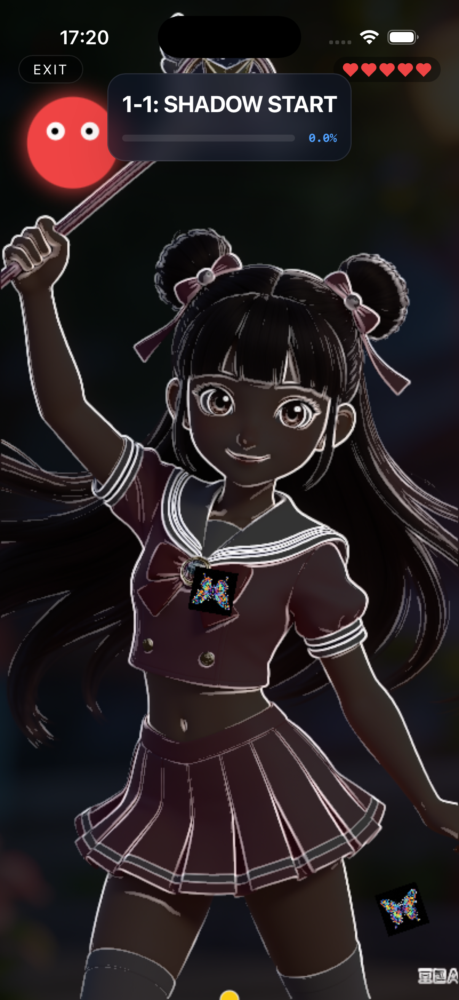
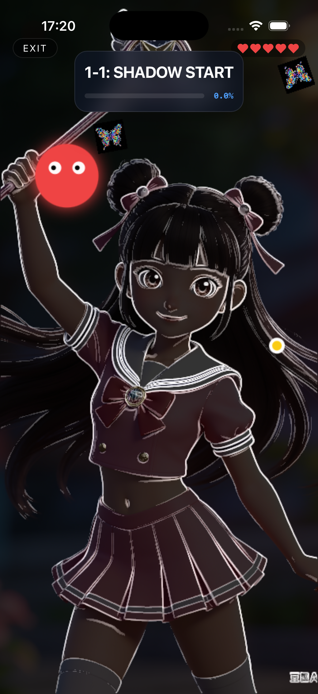
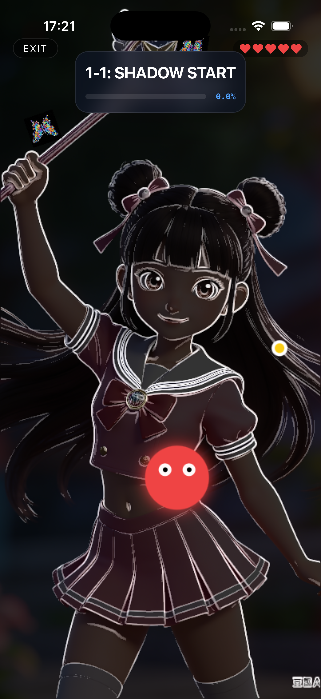
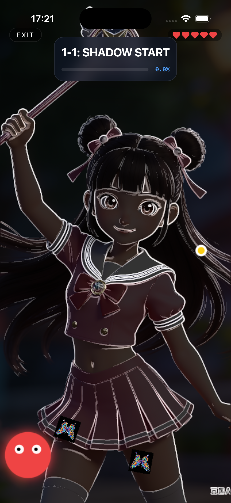
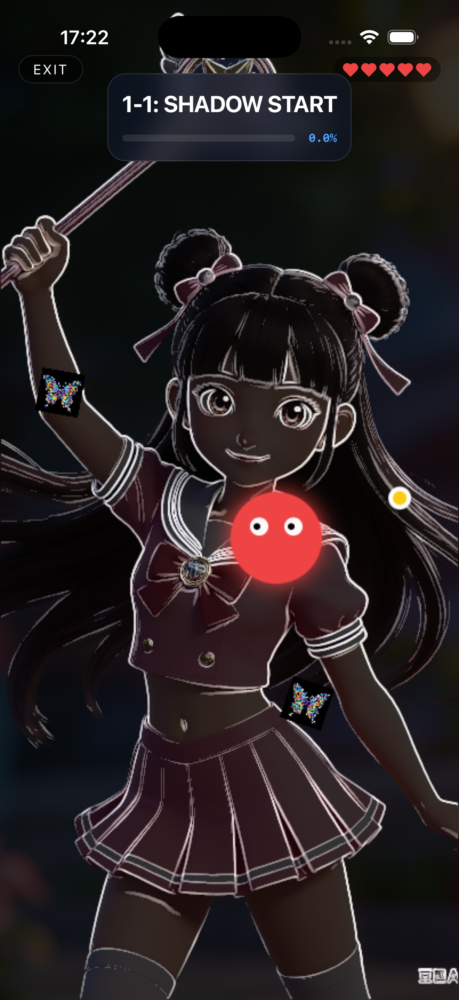
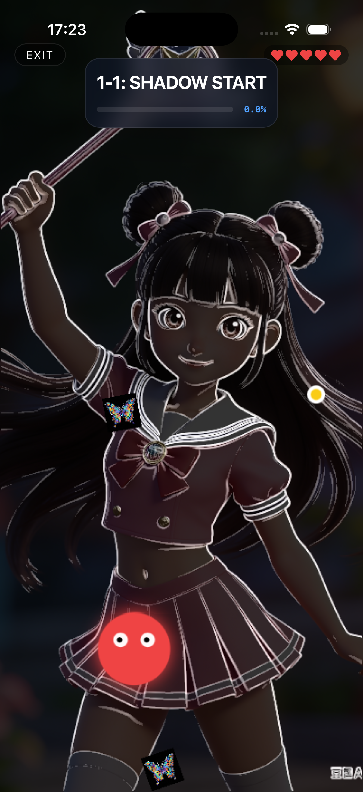
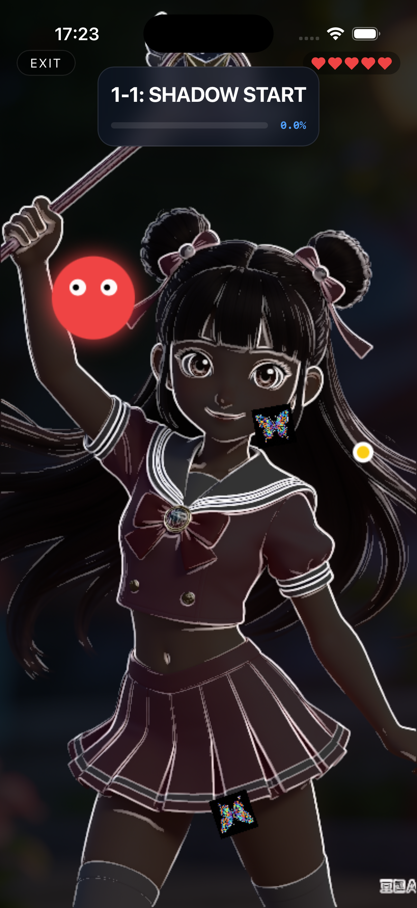
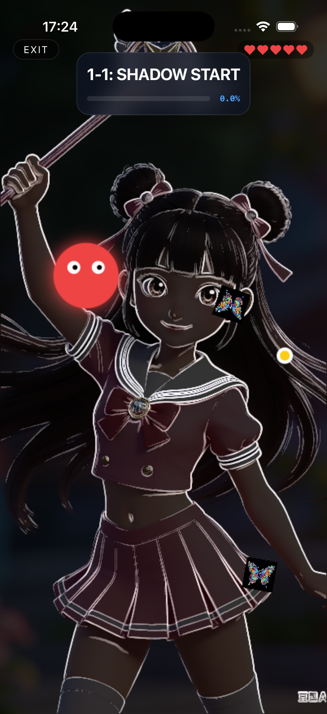
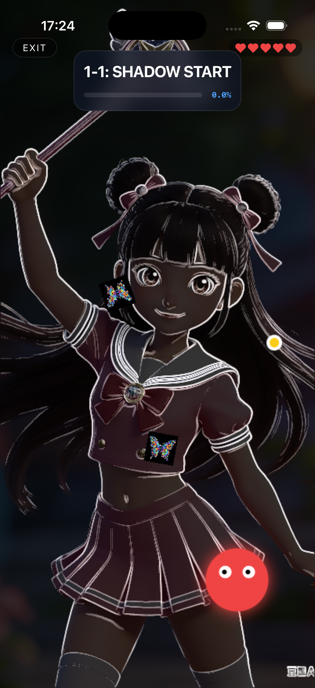
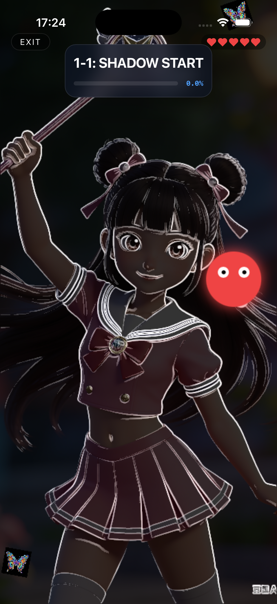
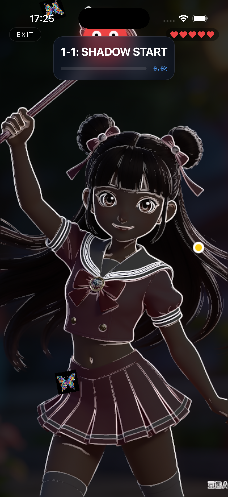
测试时间: 2026-04-16 17:16
测试方法: Python + Quartz 模拟鼠标事件
| 步骤 | 操作 | 截图 | 结果 |
|---|---|---|---|
| 0 | 应用启动 - 欢迎界面 | |
✅ 通过 |
| 1 | 点击PLAY按钮 | |
✅ 界面变化，进入选关 |
| 2 | 点击关卡1 |  |
✅ 进入关卡1预览 |
| 3 | 点击关卡1进入游戏 |  |
✅ 显示关卡1详情 |
| 4 | 点击PLAY开始游戏 |  |
✅ 进入游戏，显示5颗心，Chapter 1-4 |
| 5 | 第一次划线 (水平) |  |
✅ Victory界面，100%解锁 |
| 6 | 点击NEXT |  |
✅ 进入Chapter 1-5，5颗心 |
| 7 | 第二次划线（失败） |  |
✅ 失败界面（碰到精灵） |
| 8 | 点击NEXT继续 |  |
✅ 进入Chapter 1-6，4颗心（命消耗正确） |
| 9 | 第三次划线 |  |
✅ 成功 |
| 10 | 点击NEXT |  |
✅ 进入Chapter 1-7，3颗心 |
| 11 | 第四次划线 |  |
✅ 成功 |
| 12 | 点击NEXT |  |
✅ 进入Chapter 1-8，2颗心 |
| 13 | 第五次划线 |  |
✅ 成功 |
| 14 | 点击NEXT |  |
✅ 进入Chapter 1-9，1颗心 |
| 15 | 第六次划线（失败） |  |
✅ You Lose界面，0颗心 |
| 16 | 点击Try Again |  |
✅ 回到选关界面，5颗心重置 |
模拟器: iPhone 17 Pro (FF5368A5-E3F3-4200-B4C7-4ACD851CDCD7)
窗口位置: X=797, Y=36, W=405, H=870
缩放比例: scale_x=0.336, scale_y=0.332
iOS分辨率: 1206x2622
✅ 所有核心功能测试通过！v1.3.0 版本可以发布。